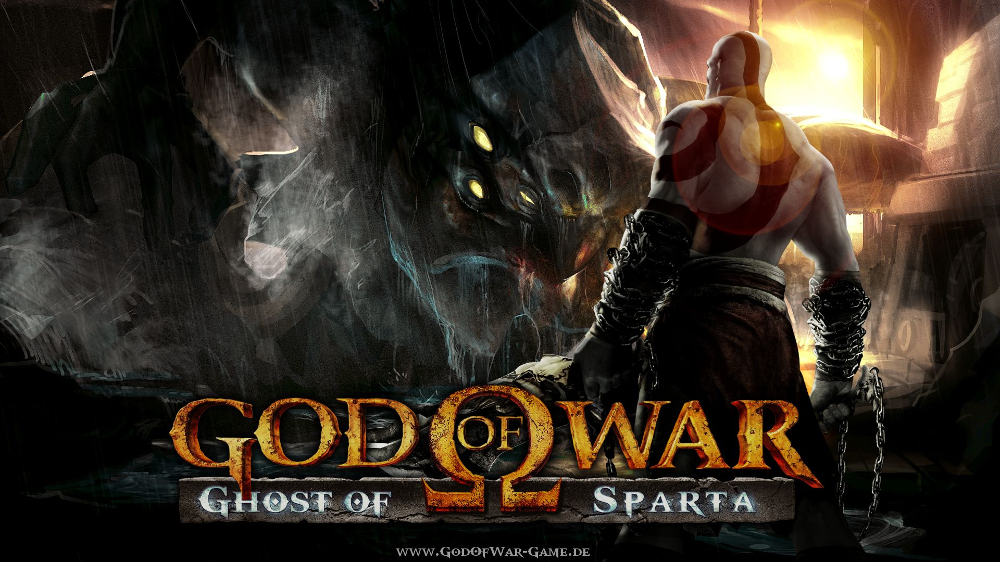
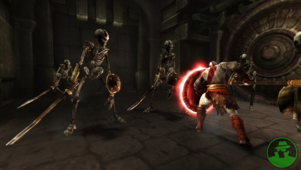

Descripción
God of War: Ghost of Sparta es un videojuego de acción-aventura en tercera persona desarrollado por Ready at Dawn Studios y SCE Santa Monica Studio. Publicado por Sony Computer Entertainment, primero fue lanzado para la consola portátil PlayStation Portable (PSP) el 2 de noviembre de 2010. Esta entrega es la sexta de la serie completa God of War
Opinion personal sobre el juego
El primer videojuego de la saga God of War que jugue, recuerdo haberlo judado en la PSP esa consola que marco mucho mi infancia y que todavia atesoro, si bien el juego no contaba con los mejores gráficos, para la época en la que salío si eran unos bastante competentes. Un juego muy fluido con una gran historia, combates interesantes y jefes bastante complicados en algunas ocasiones.

